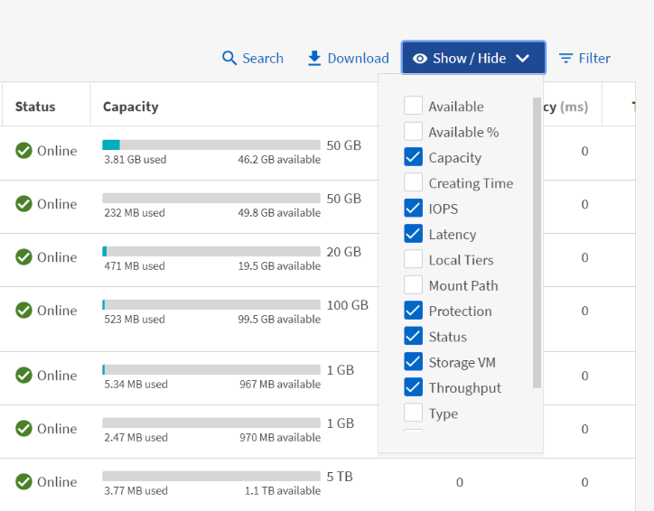
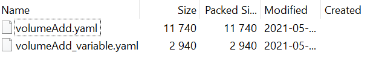

문서 변경 요청
문서 변경 요청 이 페이지 편집
이 페이지 편집 기여하는 방법 자세히 알아보기
기여하는 방법 자세히 알아보기System Manager의 향상된 기능
기여자
ONTAP 9.8에 도입된 ONTAP용 향상된 GUI 경험을 통해 일부 기능이 이동되었거나 더 이상 사용할 수 없는 것을 알 수 있습니다. ONTAP 9.9.1에서는 고객 피드백을 수집하고 GUI에 대한 일부 문제를 해결했으며 일부 누락된 기능을 다시 추가하고 새 기능 및 향상된 기능을 추가했습니다. 다음 섹션에서는 이러한 변경 사항과 새로 추가된 사항에 대해 설명합니다. System Manager에 대한 자세한 내용은 에서 확인할 수도 있습니다 "System Manager 문서".
기능 복원/사용성 향상
당신이 그것을 요청했고, 우리는 경청했습니다. ONTAP 9.9.1에서는 ONTAP 9.8 System Manager에서 더 이상 사용할 수 없는 일부 기능이 제품에 다시 추가되었습니다. 또한 새로운 사용 편의성 향상도 포함되었습니다.
볼륨 프로비저닝 중에 로컬 계층/애그리게이트를 수동으로 선택
System Manager 9.9.1을 사용하면 FlexGroup 볼륨 생성 중에 애그리게이트를 지정하는 기능 등, 새 볼륨을 프로비저닝할 때 사용할 물리적 스토리지 계층을 수동으로 선택할 수 있습니다. 선택적으로, ONTAP 및 System Manager에서 균형 잡힌 배치 논리를 기반으로 계속 선택할 수 있습니다.
용량 표시 기능 향상
이제 ONTAP의 스냅샷 복사본에서 논리적 사용 공간을 확인하고 스냅샷 복사본 유무와 상관없이 스토리지 효율성 비율을 확인할 수 있습니다.
다음 그림은 ONTAP System Manager 9.9.1 용량 보기를 보여 줍니다.

NVMe over Fibre Channel – LIF 생성
System Manager를 사용하면 포트 상태, 비대칭 포트 선택, 포트당 생성된 LIF 수를 볼 수 있는 기능 등 NVMe over Fibre Channel 네임스페이스에서 사용되는 LIF를 생성하고 볼 수 있으므로 물리적 네트워크 인터페이스에 대한 과부하를 방지할 수 있습니다.
EMS 이벤트 뷰어 – 대시보드
ONTAP 클러스터에 있을 수 있는 문제를 보다 빠르게 파악할 수 있도록 System Manager 9.9.1은 처음 로그인할 때 대시보드에 EMS 이벤트를 추가합니다. 여기에는 디스크 파손, 네트워크 링크 다운, 라이센스 문제, 쉘프 또는 노드 오류와 같은 지난 24시간 동안의 오류가 포함됩니다.
또한 볼륨 이동 실패 및 상태 모니터링 경고를 포함하여 지난 24시간 동안 경고가 표시됩니다.
스냅샷 크기 및 SnapMirror 레이블
System Manager의 스냅샷 보기에서는 SnapMirror 스냅샷 복사본에 대한 스냅샷 크기 및 레이블(예: 매일, 매주 등)을 확인할 수 있습니다.

데이터 LIF의 홈 재설정
페일오버 중 또는 네트워크 중단이 해결된 후에는 데이터 LIF가 페일오버 포트에 유지되는 경우가 많으므로 성능 및 복원력 측면에서 우려할 필요가 없습니다. 이러한 데이터 LIF를 간단하게 홈 포트로 보내려면 System Manager 9.9.1에서 이제 한 번의 클릭으로 모든 데이터 LIF를 원래 홈 포트로 다시 전송할 수 있습니다.
표시하거나 숨길 새 볼륨 필드
System Manager 9.9.1에서 로컬 계층 및 사용 가능/사용 가능한 정보를 포함하여 표시/숨기기 단추를 통해 볼륨 정보를 보는 방법도 있습니다.
다음 그림은 ONTAP 시스템 관리자 9.9의 새 볼륨 보기를 보여줍니다. 1.

대량 작업
여러 볼륨 이동 또는 삭제를 수행하거나, 여러 LUN을 이니시에이터 그룹에 매핑하거나, 여러 볼륨을 클라우드 계층에 추가해야 하는 경우, 이제 여러 개체를 선택하고 작업을 수행할 수 있습니다. 또한 볼륨 삭제는 단일 창에서 마운트 해제, 오프라인 및 삭제 확인을 수행할 수 있는 방법도 함께 제공됩니다.
다음 그림은 ONTAP System Manager 9.9.1에서 단순화된 볼륨 삭제를 보여줍니다.

Active IQ 통합
ONTAP 사용자에게 여러 정보 소스에 대한 단일 액세스 지점을 제공하기 위해 System Manager 9.9.1은 NetApp Active IQ 솔루션과의 통합을 제공합니다. 이 기능은 펌웨어 권장 사항과 NetApp Support 사이트에서 직접 이미지를 다운로드하는 방법, 클러스터의 상황을 확인할 때 쉽게 액세스할 수 있는 지원 케이스 보기를 제공합니다. 왼쪽 메뉴의 클러스터 아래에 있는 지원 링크로 이동한 후 Active IQ에 클러스터를 등록하기만 하면 됩니다.
다음 그림은 ONTAP System Manager 9.9.1의 Active IQ 뷰를 보여 줍니다.

하드웨어 시각화 플랫폼 확장
하드웨어 시각화에는 플랫폼 모델, 일련 번호, Takeover/Giveback 상태, 디스크 상태, 포트 정보 등과 같은 정보가 포함됩니다. ONTAP 9.9.1은 모든 최신 AFF 플랫폼을 포함하는 하드웨어 시각화를 위한 추가 플랫폼 지원을 제공합니다.

ONTAP 9.9.1에서 지원되는 구성 요소는 다음과 같습니다.
-
* 플랫폼. * C190/A220/A250/A300/A400/A700/A700s/A800/A320/FAS500f
-
* 디스크 쉘프. * DS4243/DS4486/DS212C/DS2246/DS224C/NS224
-
* 네트워크 스위치. * Cisco Nexus 3232C/Cisco Nexus 9336C-FX2
Ansible 플레이북 워크플로우
반복 가능하고 오류 없는 워크플로우를 제공하기 위해 Ansible과 같은 애플리케이션을 사용하여 일상적인 작업을 자동화하려는 기업이 갈수록 늘어나고 있습니다. NetApp에는 전체 Ansible 플레이북 라이브러리가 있으며, 파트너는 에서 Playbook을 비롯한 자세한 정보를 확인할 수 있습니다 "NetApp 제품용 Ansible 페이지".
System Manager 9.9.1은 단 한 번의 클릭으로 플레이북을 생성할 수 있는 새로운 방법으로 Ansible을 사용할 수 있는 추가적인 방법을 제공합니다. 이 플레이북을 사용하려면 Ansible 및 NetApp Collection을 설치합니다 "Ansible 갤럭시"단, System Manager에서 스토리지 프로비저닝 작업을 선택하면 Save to Ansible Playbook 링크를 클릭하여 Playbook을 생성할 수 있습니다.

이 버튼을 클릭하면 Ansible에 필요한 .YAML 파일이 포함된 .zip 파일이 생성됩니다.

파일 시스템 분석 기능의 향상
파일 수가 많은 환경에서 폴더 용량, 데이터 사용 기간 및 파일 수에 대한 정보를 찾으려면 시간이 많이 걸리는 명령 또는 ls, du, find, stat 등의 NAS 프로토콜을 통해 직렬 작업을 실행하는 스크립트가 필요합니다.
ONTAP System Manager 9.8은 각 볼륨에 대해 영향이 적은 스캐너를 사용하여 관리자가 모든 NAS 스토리지 볼륨에서 파일 시스템 정보를 빠르고 쉽게 찾을 수 있는 방법을 도입했습니다. 이 스캐너는 우선 순위가 낮은 작업으로 백그라운드에서 ONTAP 파일 시스템을 크롤링하며, 활성화된 볼륨으로 탐색하면 바로 사용할 수 있는 풍부한 정보를 제공합니다.
활성화 중 "파일 시스템 분석" 는 스캔할 볼륨을 탐색하기 만큼이나 쉽습니다. 스토리지 > 볼륨 으로 이동한 다음 검색을 사용하여 원하는 볼륨을 찾습니다. 볼륨을 클릭한 다음 탐색기 탭을 클릭합니다.
여기에서 페이지 오른쪽에 분석 활성화 링크가 표시됩니다.

활성화를 클릭하면 스캐너가 시작됩니다. 완료 시간은 볼륨의 오브젝트 수와 시스템 로드에 따라 달라집니다. 작업이 완료되면 System Manager 뷰에 채워진 전체 디렉토리 구조가 표시됩니다. 이 뷰는 디렉토리 트리를 따라 탐색할 수 있으며 기록 정보, 디렉토리 크기 정보 및 파일 크기에 대한 액세스를 제공합니다.
ONTAP 9.9.1에서는 파일 또는 디렉터리 이름으로 필터링하고 수행하는 등의 기능이 향상되었습니다 "빠른 디렉토리 삭제".
기타 System Manager 9.9.1 개선사항
ONTAP 9. 9.1에서는 System Manager에서 다음과 같은 향상된 기능도 제공합니다.
|
|